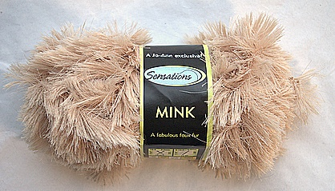
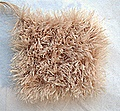

|
||
Premium Patterns Wintry Mix Mitts Love Bytes HawkeyeFree Patterns Kiddie Cadet Summerlin Ruffled Scarf Seamless DS Sock Simply Seamless Pouch Myriads of MushroomsExtras DIY Mitten Blocker Felt Patch Tutorial Yarn Dyeing Tutorial Needle Pouches Knitting Journal |
MinkReviewed by Grace Schnebly
 Manufacturer: Jo-Ann Sensations I found this yarn in November, 2006 when looking for a faux fur yarn to replace Plymouth Foxy ($28.00/ball) for the Mowat Mukluks pattern by Jennifer L. Appleby in the Winter 2005 issue of Interweave Knits. I was looking for a fur yarn that was natural looking in color and texture, durable, and affordable. I did a bit of searching and didn’t want to use just regular Lion Brand Fun Fur, but could not afford the higher end stuff. After reading some mixed reviews on joann.com, I decided to go for it and try out Sensations Mink yarn. First LookMy first impression of this yarn was that it was very furry and soft. There seemed to be a lot of “hairs” per inch of yarn, making it very fluffy when knitted. This yarn is definitely soft and silky, and it feels great next to your skin. The color I ordered was a great natural tone. The entire yarn is composed of only one shade, there is no color variation. However when the yarn catches the light, it gives it a beautiful shine and makes it appear almost multi-tonal. Mink knits up to a light fabric, with a nice drape. Stitches are totally covered by the furriness of this yarn, and does not need to be held double stranded to achieve a nice furry texture. Minor ProblemsThere are several negative qualities that are quickly spotted when working with this yarn. First, the ends of the fur are frayed slightly. This causes the tips to have a more dull look than the rest of the fur. Secondly, this yarn does shed a bit. Hairs can get pulled to look uneven, or get pulled out totally. When I first used this yarn, I thought I was going to be so covered in fur that I would end up looking like an albino Sasquatch. Luckily this didn’t happen, and although there was some shedding, I was pleasantly surprised that it was a minor amount. After reading the reviews on the Jo-Ann website, I was expecting the worst, and that did not turn out to be the case at all. Any hairs that get pulled to a longer length can easily be trimmed, and the shedding that does occur does not affect the overall furriness and fullness of the product. As you wear a garment made of Mink, you’ll have to groom it every so often just to keep it looking neat. I would warn against using this yarn for baby clothes simply because the fibers can get pulled out and might cause a choking hazard. FeltingI originally purchased this item to use as a substitute for the faux fur yarn in the felted Mowat Mukluks pattern. For the fur sections on the boots, I carried Mink along with a single strand of Cascade 220. At first I thought that I would need to carry along two strands of Mink, but that made it much too furry. When it came time to felt the boots I was pretty nervous, but I was very pleased with the results. This yarn held up well in the washing machine, and the wool felted well around the fur. Some shedding did occur during the felting process but not as much as I had expected. It would be a good idea to put your project inside a pillow case that zips shut just to give your washing machine extra protection. The fur does look a little shabby right after pulling it out of the machine, especially when it is all wet. Once it is totally dry it regains it original loft, color, softness, and shine. The tips fuzz and fray a little more in the washing machine, and wool fibers got tangled in the very ends of the fur strands, but they were easily trimmed out. It did take a bit of extra work just to get the fur looking just the way I wanted but it was well worth it. I do think that the yarn is more likely to shed after felting than in its original form. Overall I was more than happy with the final product and how this yarn withstood the felting process. Pros
Cons
ConclusionOverall Mink performed better than I expected. Sure there was some shedding, and you could pull it apart if you wanted to, but that is to be expected with any faux fur yarn in this price range. This yarn seems like a pretty good deal, and periodically goes on sale for $3.00/ball at joann.com. Mink is a good yarn when you want to make something that looks reasonably like fur but don’t want to spend a fortune on higher end products. It is fun and easy to work with, and it can be used in a variety of garments using a variety of techniques. I will definitely be using this yarn in future projects. |
   Recent ReviewsRecent Posts
 Our Favorites
|
| © 2007 KathrynIvy.com | ||
{kind=link}
{kind=link}